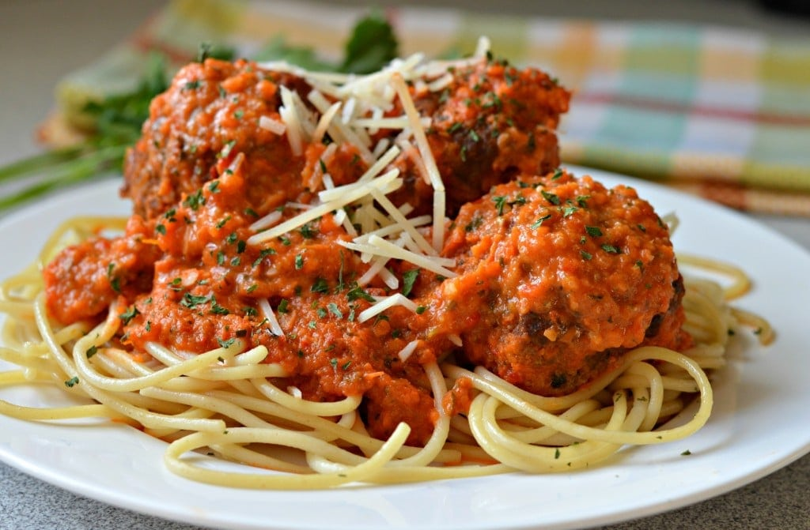

es una fina pasta hervida
con agua y aceite, especiada con
sal, pimienta y oregano.
Complementada con unas deliciosas
albondigas suizas con una exquisita
salsa de tomate casera y para finalizar
con un rico queso rayado manchego

Unas deliciosas Milanesas de Carne,
pollo o cerdo, frita y cocida al
horno acompañada de queso musarella
con muestra famosa salsa de tomate
y sobre el queso una generosa cantidad
de jamon cocido o panceta a eleccion.
para finalizar agergamos sal y dos
hojas de laurel para mejor presentacion
Un delicioso pastel de papa con la mejor
carne de mar de plata, suave y jugosa.
con una gran capa de sabrosa papa con
mucho queso gratinado de excelente
calidad.
Un platillo elaborado y muy delicioso.